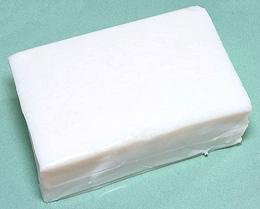
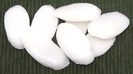
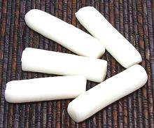
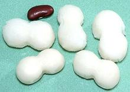

SAFARI
Users
Buying:
Many Asian markets here in Los Angeles have fresh Rice Cakes available. Due to the conclusion of a long battle between Asian markets and the California Food Safety people, these products can be shelved unrefrigerated, but for only one day. Refrigeration stiffens these products.Storing, Fresh:
Because fresh Rice Cakes are stiffened by refrigeration, they should be used the day purchased, or the next day. Beyond that, they go to mold, which is not dangerous, but definitely changes the flavor. Some products are now available in sterile vacuum packaging (heavier plastic and tightly wrapped). These may be good for a number of days at room temperature, but once opened will start to mold in a day.Cooking Frozen:
If simply set out to thaw, Rice Cakes will quickly crack and start to crumble. The way to handle them is to bring enough water to cover them well to a boil. If they have ice, rinse them in hot running water to remove it. Dump them into the boiling water and turn off the heat. Depending on thickness, they will be ready in 30 minutes to an hour.After this soaking, they will still be stiff, but can be more easily sliced. They will need 10 to 20 minutes of cooking, depending on thickness.
Varieties
Fresh Rice Cake Block
 [373, Bánh Bôt Chiên (Viet - "Flour for Bôt Chiên")]
This form is increasingly available in the Asian markets here in Los Angles (2019). It is essential for a very famous Vietnamese recipe for Bôt Chiên, see our recipe Fried Rice Cake with Eggs. This Rice Cake can also be used to cut noodles that are a little thicker than the 0.040 inch (1 mm) thickness of Fresh Rice Paper Sheets. The photo specimen was 6 x 3 x 2-1/2 inches and weighed 2 pounds.
I have found that for frying for Bôt Chiên, commercial
blocks fry much more quickly after a night in the fridge. We also have
a recipe for making this
Rice Cake yourself, it is easy to do.
Rice Cake Ovals
 [336, Rice Ovalettes, Rice Cake; Nian Gao (China); Dduk (Korea)]
Originally developed in Ningbo in Zhejiang, China, these are now very popular
through China, and especially Korea. They are often used in stir fries and
soups. They are available fresh, dried, semi-dried in sterile vacuum packs,
refrigerated, or frozen. For frozen, see instructions
Cooking Frozen. The semi-dried are usually simmered for about 10
minutes to prepare them for stir fry, the fresh several minutes less. The
dried needs to be soaked overnight, then cooked like the semi-dried. The
photo specimens, semi-dried, made in USA, were typically 1.9 inches long,
1 inch across and 0.19 inch thick, cut diagonally from a 1 inch diameter
cylinder. Sweet Rice, Salt, Water, Wheat Starch (wheat starch is gluten
free, but versions without that ingredient can be had).
Rice Cake Sticks
 [345, Tteokguk-yong-tteok (Korea)]
These are quite popular in Korea, where they are made up with a mild chili
sauce and sold by street vendors as a snack. They are also often sliced for
use in various recipes. The photo specimens were 2 inches long and 1/2 inch
diameter, purchased from a Korean market in Los Angeles, refrigerated in a
23 ounce vacuum packed bag. Korean markets also often have them fresh. If
frozen, see Cooking Frozen. Ingred: Rice, Salt,
Water.
Rice Cake Peanuts
 [375 (Korea)]
These work well in soups, the peanut shape making them quite easy to pick up
with chopsticks. Since they are sold frozen, see Cooking
Frozen for preparation. The photo specimens were 1.25 inches long and
0.65 inch wide, purchased from a Korean market in Los Angeles
(La Cañada), frozen in a 23 ounce vacuum bag. Ingred: Rice, Salt,
Water.